- CRM
- SaaS
- Desktop & mobile

Elite IndustrialOptimización de la gestión de clientes a través de una experiencia digital intuitiva
Élite Industrial es una empresa de venta y renta de naves dentro de parques industriales. Gestiona sus clientes con una estructura visual poco clara y desorganizada, lo que dificulta el seguimiento de oportunidades e impacta directamente en la eficiencia del equipo de ventas.
Nuestro objetivo:
Diseñar una experiencia que mejore la claridad y jerarquía de la información. Facilitar el seguimiento de interacciones y acciones pendientes.